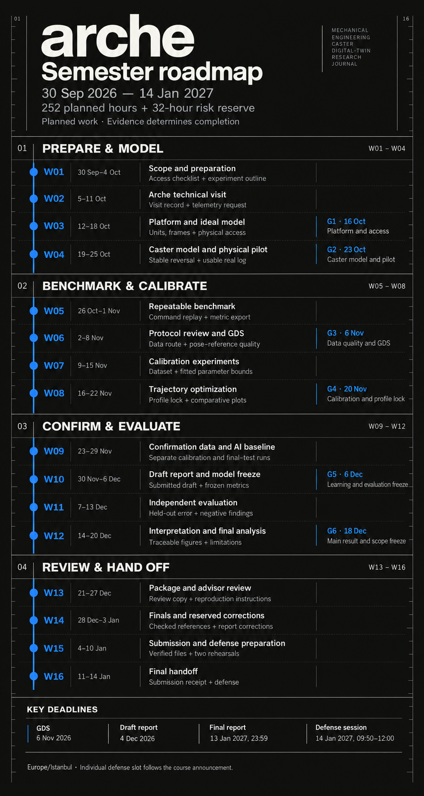

30 September 2026 – 14 January 2027
252 planned hours and 32 hours in reserve. The weekly schedule records acceptance criteria, GitHub status and the latest evidence.
Europe/Istanbul · Official calendar ↗
Scroll the table to see the status and evidence columns.
| Week | Period | Deliverable / acceptance criteria | Hours | Status | Latest evidence |
|---|
